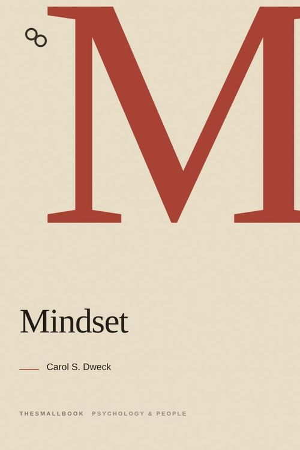

Library › Authors › Carol S. Dweck
Books by Carol S. Dweck
Carol S. Dweck has one book in the library. Every book here is read down to the big idea, the lessons, the lines worth keeping and the actions worth taking. Start with the summary, then buy the full book if it earns a place on your shelf.

Mindset
2006 · 8 min · 6 lessons
In a fixed mindset, failure defines you. In a growth mindset, failure informs you. The belief itself changes what you become.
Stanford psychologist Dweck spent decades on one deceptively simple question: what do people believe about ability? FIXED-mindset people believe qualities are carved in stone - so life becomes an endless audition to prove talent and hide deficiency, effort feels shameful ('if you were smart, you wouldn't need to try'), and setbacks are verdicts. GROWTH-mindset people believe abilities are developable - so challenges are nutrition, effort is the path, criticism is information, and others' success is inspiration....
Lessons in the summary
- The Two Mindsets: Prove vs. Improve
- The Peril of Praise: 'Smart' Is a Trap
- Business: When Genius CEOs Kill Companies
- Relationships: The Fixed-Mindset Fairy Tale
- Changing Mindsets: The Journey to Growth
- The Mindset of the Champion: Growth Is the Goal, Not the Win
Lines worth keeping
- Becoming is better than being.
- Why waste time proving over and over how great you are, when you could be getting better?
- The view you adopt for yourself profoundly affects the way you lead your life.
Questions Carol S. Dweck helps answer
Read nearby authors next
- Devdutt Pattanaik 5 books
- Malcolm Gladwell 5 books
- A.P.J. Abdul Kalam 4 books
- Adam Grant 4 books
- Chip Heath & Dan Heath 4 books
- Daniel H. Pink 3 books
- Gurcharan Das 3 books
- Jonathan Haidt 3 books